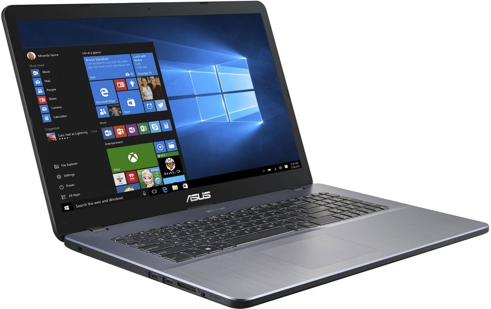

Datorns uppbyggnad
En dator har flera olika delar som får den och fungera, lite så som människan.
- Chassi / Kroppen
- Processor / Hjärnan
- Moderkort / Nervsystem
- Grafikkort / Ögon och egen hjärna
- RAM-minne / korttidsminne
- Hårddisk / Långtidsminne
- Nätaggregat / Strömkälla
| Komponent | Känt märke |
|---|---|
| Chassi | Thermaltake |
| Processor | Intel och amd |
| Moderkort | Asus och Msi |
| Grafikkort | Nvidia och Amd |
| RAM-minne | Corsair |
| Hårddisk | Seagate och Samsung |
| Nätaggregat | Corsair och Asus |
- 1
- 3
- Nummer
- 1
- 3
- Mer nummer
- 4
- 5
Laptopar har väldigt lik uppbyggnad men deras komponenter är specifika för att vara i laptops.
